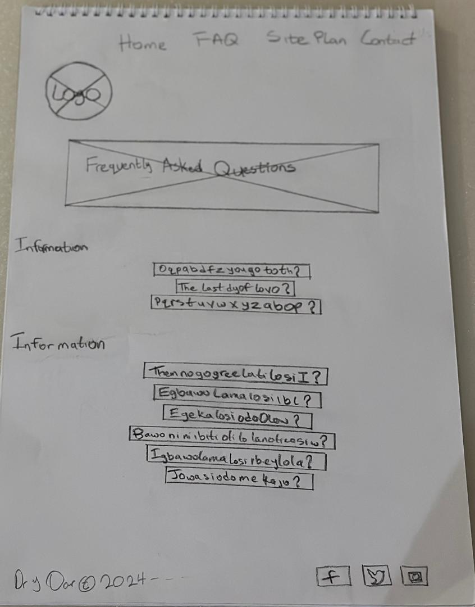

<!DOCTYPE html>
<html lang="en">
<head>
    <meta charset="UTF-8">
    <meta name="viewport" content="width=device-width, initial-scale=1.0">
    <title>Document</title>
</head>
<body>
     
</body>
</html>
<!DOCTYPE html>
<html lang="en-us">

<head>
  <meta charset="utf-8" />
  <title>Site Plan</title>
  <link type="text/css" rel="stylesheet" href="styles/site-plan-rafting.css" />
</head>

<body>
  <header>
    <h1>White Water Rafting Site Plan</h1>
    <h2>Tayo Martins</h2>
    <h2>WDD 130-[01]</h2>
    <!-- In the header above, add the name of your site, your name and class number. For example if you are in section 3 you would put WDD 130-03 -->
  </header>
  <main>
    <!-- ------------------------Steps 2-5------------------------------ -->
    <hr />
    <h2>Overview</h2>
    <h3>Purpose</h3>
    <p>[The purpose of a white water rafting website is multifaceted, serving as a vital tool for promoting the rafting company, facilitating bookings, providing information, and enhancing customer engagement. Here's a breakdown of why a white water rafting company needs a website and what it aims to accomplish:
       <p> 1. Promotion and Marketing: The website serves as a digital storefront, showcasing the thrilling experiences and natural beauty of the rafting trips offered by the company. Through compelling visuals, videos, and descriptive content, potential customers can gain insight into the adventures awaiting them, enticing them to book a trip.</p>
        
       <p> 2. Booking and Reservation: One of the primary functions of the website is to streamline the booking process for customers. It should feature an intuitive booking system that allows visitors to easily select trip dates, choose from available packages, and make secure online payments. This convenience encourages spontaneous bookings and increases the likelihood of converting website visitors into paying customers.</p>
        
       <p> 3. Information Resource: The website serves as a comprehensive source of information for both prospective and current customers. It should provide details about the different rafting trips offered, including difficulty levels, duration, routes, safety measures, equipment provided, and pricing. Additionally, it can include FAQs, packing lists, safety guidelines, and directions to the rafting location to help visitors prepare for their adventure.</p>
        
        <p>4. Enhanced Customer Experience: A well-designed website enhances the overall customer experience by offering interactive features and valuable resources. This can include photo galleries, video testimonials, trip reviews, blog articles about rafting tips and techniques, and social media integration. By engaging visitors and fostering a sense of community, the website cultivates trust and loyalty among customers.</p>
        
        <p>5. Brand Building and Credibility: A professionally designed website reflects the credibility and professionalism of the rafting company. It should feature a visually appealing design, intuitive navigation, and high-quality content that aligns with the company's brand identity. By presenting itself as a reputable authority in the adventure tourism industry, the website reinforces customer confidence and encourages repeat business.</p>
        
        <p>6. Market Expansion and Accessibility: With a website, the rafting company can reach a wider audience beyond its local market. By optimizing the website for search engines (SEO) and incorporating online marketing strategies such as email campaigns and social media advertising, the company can attract visitors from different geographic locations and demographic segments. Furthermore, the website ensures accessibility for individuals with disabilities, allowing inclusivity and equal access to adventure experiences.</p>
        
      <p> Overall, a white water rafting website serves as a powerful tool for promoting the company, facilitating bookings, educating customers, and enhancing the overall customer experience. By leveraging the capabilities of the website effectively, the rafting company can increase its visibility, attract more customers, and establish itself as a leader in the adventure tourism industry, ultimately driving business growth and success.]</p>
    <!-- change this -->

    <h3>Audience</h3>
    <p>[The type of person likely to visit the white water rafting website will often fall into these categories:
        
        <p> 1. Adventure Seekers: These individuals are passionate about pushing their limits and experiencing thrilling activities. They may have a bucket list of adrenaline-fueled adventures, and white water rafting is a perfect fit for their quest for excitement.</p>
        
        <p> 2. Outdoor Enthusiasts: Nature lovers, hikers, campers, and anyone who enjoys spending time outdoors are drawn to the website. They appreciate the opportunity to explore natural landscapes, and white water rafting offers a unique way to experience rivers and canyons up close. </p>
        
        <p> 3. Social Groups and Teams: Friends, families, and corporate teams looking for memorable bonding experiences are potential visitors. They seek activities that foster teamwork, communication, and shared memories, making white water rafting an ideal choice for group outings.</p>
        
        <p> 4. Travelers and Tourists: Tourists visiting a region known for its scenic rivers and outdoor recreation are likely to search for white water rafting opportunities. They may include rafting as part of their vacation itinerary to add excitement and adventure to their trip.</p>
        
        <p> When building the website, it's crucial to keep these personas in mind to ensure the content, design, and user experience are tailored to their preferences and needs.</p>
        
        <p> 1. Color Palette: Opt for vibrant, energetic colors that evoke the spirit of adventure and the natural beauty of the outdoors. Shades of blue, green, and earthy tones can create a visually appealing and immersive experience, reflecting the colors of rivers, forests, and mountains.</p>
        
        <p> 2. Content Strategy: Develop engaging content that highlights the excitement, challenge, and camaraderie of white water rafting. Incorporate storytelling elements to convey the thrill of navigating rapids, the awe-inspiring scenery, and the sense of achievement at the end of the journey.</p>
        
        <p> 3. User Experience: Design the website with a focus on usability and accessibility, ensuring visitors can easily find information about rafting trips, safety guidelines, equipment rental, and booking options. Use clear navigation menus, descriptive labels, and intuitive layout to guide users through the site seamlessly.</p>
        
        <p> 4. Visual Identity: Choose fonts and typography that are legible and reflect the adventurous spirit of the brand. Bold, dynamic fonts for headlines and titles can convey energy and excitement, while clean, easy-to-read fonts for body text maintain readability and professionalism. </p>
        
        <p> By creating a website that resonates with adventure seekers, outdoor enthusiasts, social groups, and travelers, the white water rafting company can attract more visitors, inspire them to book rafting trips, and ultimately enhance their overall experience with the brand.]</p>
    <!-- change this -->

    <hr />
    <h2>Branding</h2>
    <h3>Website Logo</h3>
    <!-- Replace this with some sort of logo for your site.  A logo can be as simple as the name of your site in a nice font :) -->
    
    <hr />
    <h2>Style Guide</h2>

    <!-- ------------------------Steps 6-9------------------------------ -->

    <h3>Color Palette</h3>
    <!--  The colors you choose for a website are one of the most important decisions you will make. Follow the instructions on the activity in Canvas then return and replace the color codes below with the hex color codes (the 6 digit numbers that show at the bottom of each color) for the colors you have chosen below.  You should have at least 2 colors but do not have to fill in all 4 if you do not need them.  -->

    <!-- Copy and paste the URL to your finished palette below. Replace the href value that is there with yours. Make sure to paste it into both the href value and the content text of the <a> tag -->
    <p>Palette URL:</p>
    <a href="https://coolors.co/03045e-61e786-00b4d8-90e0ef-ffffff"
      target="_blank">https://coolors.co/03045e-61e786-00b4d8-90e0ef-ffffff</a>

    <table class="colors">
      <tr>
        <th>Primary</th>
        <th>Secondary</th>
        <th>Accent 1</th>
        <th>Accent 2</th>
      </tr>
      <!-- Replace the numbers in the boxes below with your hex color codes. Then switch to the site-plan.css file and change your colors there as well. -->
      <tr>
        <td class="primary">[#c]</td>
        <td class="secondary">[#61e786]</td>
        <td class="accent1">[#00b4d8]</td>
        <td class="accent2">90e0ef</td>
      </tr>
    </table>

    <!-- ------------------------Steps 10-12------------------------------ -->

    <h3>Typography</h3>
    <!-- Choose a font for your paragraphs (body copy) and headlines. What font(s) have you chosen? Think also about which of your colors above you might use for background and font colors. -->

    <h4>
      Heading Font: [Rock Salt]
      <!-- change this -->
    </h4>
    <h4>
      Paragraph Font: [Roboto]
      <!-- change this -->
    </h4>
    <h3>Normal paragraph example</h3>
    <p>
      The best Whitewater Rafting in Colorado, White Water Rafting Company
      offers rafting on the Colorado and Roaring Fork Rivers in Glenwood
      Springs. Since 1974, we have been family owned and operated, rafting the
      Shoshone section of Glenwood Canyon and beyond.
    </p>
    <h3>Colored paragraph example</h3>
    <p class="colored">
      Trips vary from mild and great for families, to trips exclusively for
      physically fit and experienced rafters. No matter what type of river
      adventures you are seeking, White Water Rafting Company can make it
      happen for you.
    </p>

    <!-- ------------------------Step 13------------------------------ -->

    <h3>Navigation</h3>
    <!-- Think about how you want your navigation bar to look. In the site-plan.css file change the colors to your colors to get the look you desire. -->
    <nav>
      <a href="index.html">Home</a>
      <a href="FAQ.html">FAQ</a>
      <a href="contactus.html">Contact Us</a>
      <a href="index.html">Home</a>
    </nav>
    <hr />
    <h2>Site Map</h2>
    <div class="sitemap">
      <div class="sm-home">Home</div>
      <div class="sm-page2">
        [Page2]
        <!-- this page will have a name later -->
      </div>
      <div class="sm-page3">Contact Us</div>

      <div class="top">&nbsp;</div>
      <div class="left">&nbsp;</div>
      <div class="right">&nbsp;</div>
    </div>
    <hr />
    <h2>Wireframes</h2>
    <!-- Create an additional wireframe for your site. List it here below the Home page wireframe. -->

    <h3>Home</h3>

    

    <h3>[Page 2]</h3>

    
  </main>
</body>

</html>